こんにちは、Azure Monitoring サポート チームの北村です。
今回は Azure Monitor の診断設定に関するよくあるご質問をご紹介します。
Q & A タイトル
<Azure Monitor の診断設定の全般>
- Q. Azure Monitor の診断設定について教えてください。
- Q. Azure VM にも「診断設定」というメニューがありますが、Azure Monitor の診断設定とは異なる機能ですか。
- Q. Azure Monitor の診断設定は、すべてのリソースでサポートしていますか。
- Q. Azure Monitor の診断設定の設定手順を教えてください。
- Q. Azure Monitor の診断設定を構成する前に生成されたログやメトリック、アクティビティ ログは、ストレージ アカウントや Log Analytics ワークスペースにエクスポートされますか。
- Q. Azure Monitor の診断設定の構成を検討しています。私の環境の場合、コストはどれぐらいになりますか。
<リソース ログ・メトリックのエクスポート>
- Q. Azure リソースのログやメトリックを Log Analytics ワークスペースにエクスポートすることを検討しています。必要な権限を教えてください。
- Q. Azure リソースのログやメトリックをストレージアカウントにエクスポートすることを検討しています。必要な権限を教えてください。
- Q. 複数のサブスクリプションのリソース ログやメトリックを、一つの Log Analytics ワークスペースにエクスポートすることは可能ですか。
- Q. 複数のサブスクリプションのリソース ログやメトリックを、一つのストレージ アカウントにエクスポートすることは可能ですか。
- Q. 別テナントの Log Analytics ワークスペースやストレージ アカウントに対して診断設定を構成することは可能ですか。
- Q. Azure Monitor の診断設定でリソース ログとメトリックを、ストレージ アカウントにエクスポートしています。データの格納場所を教えてください。
- Q. Azure Monitor の診断設定でリソース ログとメトリックを、Log Analytics ワークスペースにエクスポートしています。データの格納場所を教えてください。
- Q. Azure Monitor の診断設定でリソース ログとメトリックを、ストレージ アカウントにエクスポートしています。データの格納場所を変更することはできますか。
- Q. Azure VM のプラットフォーム メトリック (ホスト OS メトリック) を Log Analytics ワークスペースにエクスポートしたいのですが、Azure ポータル上に設定画面が見当たりません。
<アクティビティ ログのエクスポート>
- Q. アクティビティ ログの診断設定の設定手順を教えてください。
- Q. アクティビティ ログのカテゴリの詳細を教えてください。
- Q. アクティビティ ログを Log Analytics ワークスペースにエクスポートすることを検討しています。診断設定を構成するために必要な権限を教えてください。
- Q. アクティビティ ログをストレージ アカウントにエクスポートすることを検討しています。診断設定を構成するために必要な権限を教えてください。
- Q. 特定のリソースのアクティビティ ログを、Log Analytics ワークスペースやストレージ アカウントにエクスポートすることは可能ですか。
- Q. Azure ポータルからリソース グループの [アクティビティ ログ] > [診断設定] を開くと、アクティビティ ログの診断設定が表示されます。リソース グループ単位でアクティビティ ログの診断設定を作成できるのでしょうか。
- Q. Azure Monitor の診断設定で、アクティビティ ログをストレージ アカウントにエクスポートしています。データの格納場所を教えてください。
- Q. Azure Monitor の診断設定で、アクティビティ ログを Log Analytics ワークスペースにエクスポートしています。データの格納場所を教えてください。
- Q. アクティビティ ログを Log Analytics ワークスペースにエクスポートした場合、Log Analytics ワークスペースに対する料金が発生しますか。
<トラブルシューティング>
- Q. Azure Monitor の診断設定によるプラットフォーム メトリックやリソース ログのエクスポートは、100 % のデータ エクスポートを保証していますか。
- Q. Log Analytics ワークスペースやストレージ アカウントにログやメトリックをエクスポートしていますが、データが格納されていません。考えられる原因を教えてください。
- Q. Azure Monitor の診断設定を構成しましたが、設定が消えてしまいました。
- Q. 新たに Azure Monitor の診断設定を構成しようとしたところ、ストレージ アカウントの保持期間を指定する項目が表示されません。以前は、診断設定にてストレージ アカウントにエクスポートした場合、保持期間を指定する項目が表示されていました。
Azure Monitor の診断設定の全般
Q. Azure Monitor の診断設定について教えてください。
Azure プラットフォームのメトリックやログ、アクティビティ ログを Log Analytics ワークスペース等にエクスポートする機能です。
プラットフォームのメトリックは Azure リソースから一定の間隔で自動で収集される数値データであり、既定で収集されます。メトリックは Azure 基盤側のメトリック データベースに保存され、Azure ポータルのメトリック エクスプローラーから確認できます。
プラットフォームのログは Azure リソース内で実行された操作に関するデータであり、Azure Monitor の診断設定を構成しない限り、収集することはできません。プラット フォームのメトリックを既定の保持期間 (93 日間) 以上保管したい場合やプラットフォームのログを保管・監視したい場合にご利用いただける機能です。
Q. Azure VM にも「診断設定」というメニューがありますが、Azure Monitor の診断設定とは異なる機能ですか。
はい、Azure VM のメニューで表示される「診断設定」は、Azure Monitor の診断設定とは別の機能です。
Azure ポータルから Azure VM を開くと [診断設定] という項目がありますが、これは Azure VM に Azure Diagnostics 拡張機能をインストールし、ゲスト OS のログやメトリックをストレージ アカウントに送信する機能です。この 2 つの機能の違いについては、Azure VM の診断設定とそれ以外のリソースにおける診断設定について のブログで詳しく説明しておりますので、ご覧いただけますと幸いです。
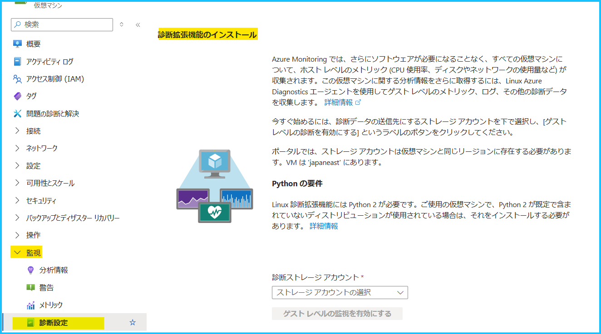
Q. Azure Monitor の診断設定は、すべてのリソースでサポートしていますか。
いいえ、Azure Monitor の診断設定は、すべてのリソースでサポートしておりません。
基本的には、こちらの公開情報でサポート状況をご確認いただけます。
メトリックの場合は、上記公開情報経由でアクセスできる各ページに掲載されている表の [DS エクスポート] 列が「はい」の場合、診断設定で Log Analytics ワークスペース等にエクスポート可能です。下図は Microsoft.Automation/automationAccounts の例です。
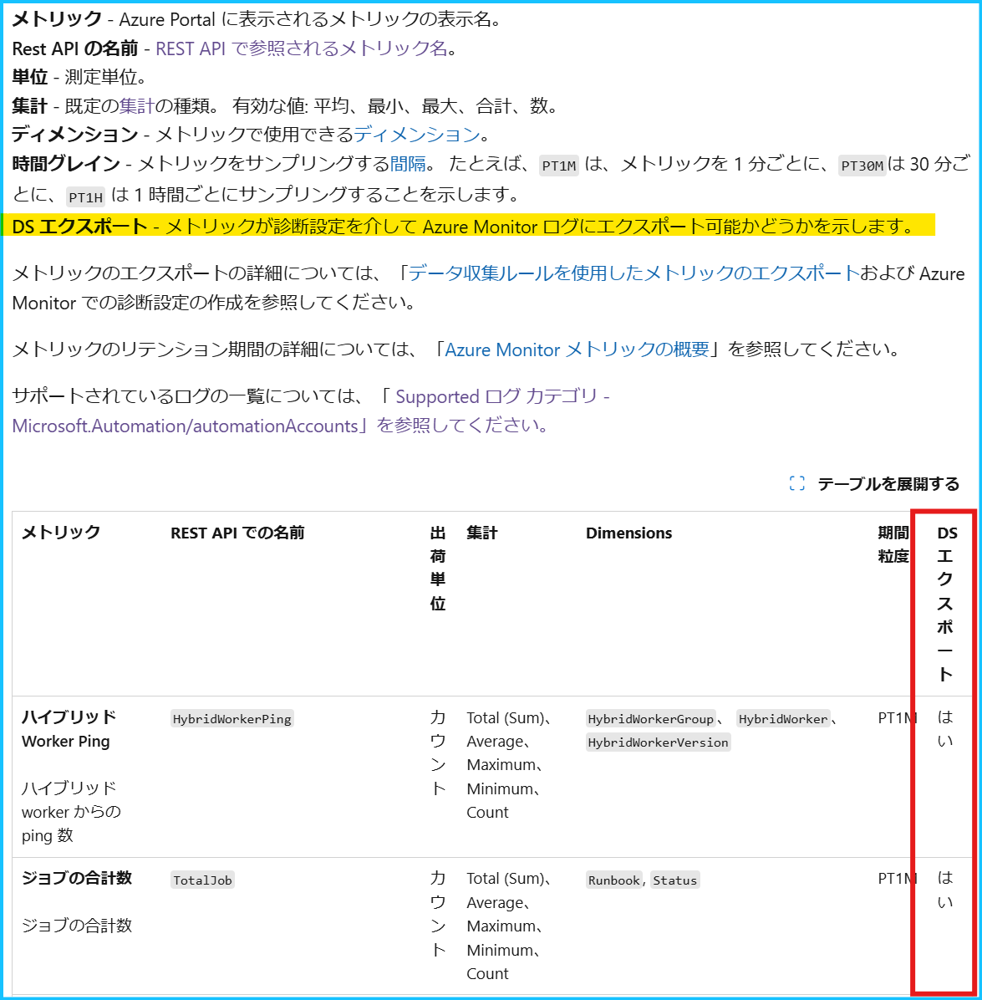
ログの場合は、各ページにカテゴリやログの出力先テーブル (宛先が Log Analytics ワークスペースの場合) が記載されています。
下図は Microsoft.Automation/automationAccounts の例です。
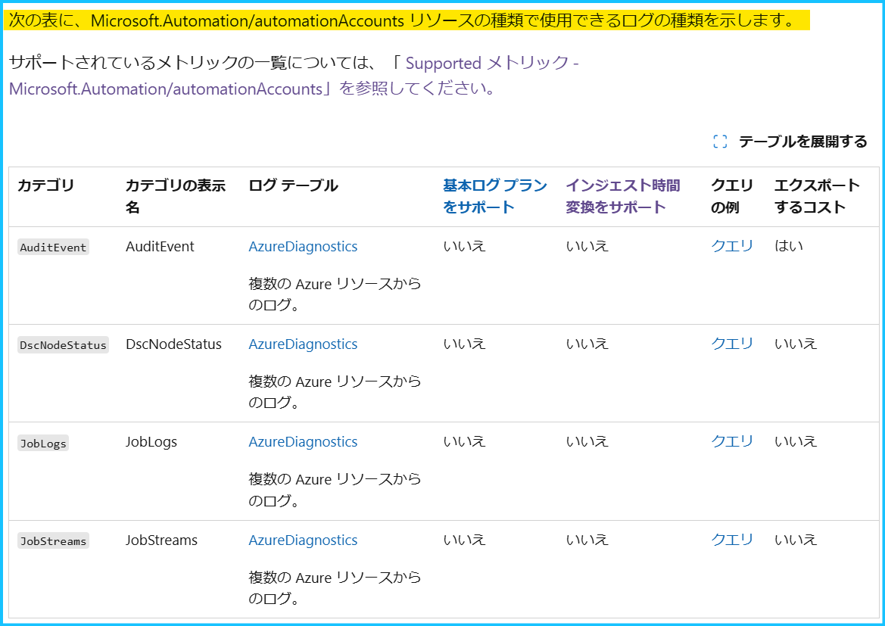
Q. Azure Monitor の診断設定の設定手順を教えてください。
基本的には Azure ポータルから対象リソースを選択し、[監視] - [診断設定] から構成することが可能です。
設定手順の詳細はこちらの公開情報をご覧ください。
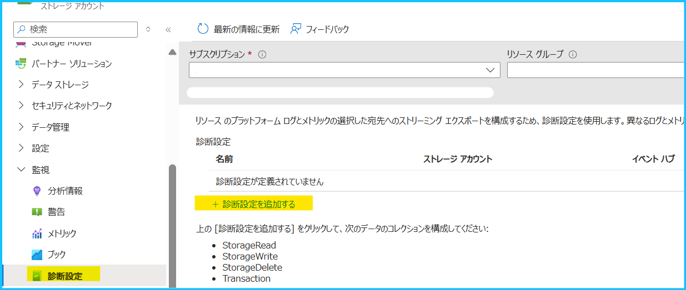
Q. Azure Monitor の診断設定を構成する前に生成されたログやメトリック、アクティビティ ログは、ストレージ アカウントや Log Analytics ワークスペースにエクスポートされますか。
いいえ、エクスポートされません。
診断設定の構成後に生成されたログやメトリックがエクスポートされます。
Q. Azure Monitor の診断設定の構成を検討しています。私の環境の場合、コストはどれぐらいになりますか。
誠に残念ではございますが、発生する具体的なコストについては一概に回答出来ません。
理由は、ご利用いただいている Azure サービスの種類やリソースの数・Azure のご利用方法など、お客様の環境に影響して出力されるログの量が変わるからです。
弊社といたしましては、料金計算ツールを用いてコストをお見積りいただくか、最低限の Azure リソースに対して一時的に診断設定をご構築いただき、1 日あたりのログ量を計測いただくことを一般的な戦略として案内しております。Azure Monitor のコスト見積もりに関しましては、下記の公開情報もご覧いただけますと幸いです。
リソース ログ・メトリックのエクスポート
Q. Azure リソースのログやメトリックを Log Analytics ワークスペースにエクスポートすることを検討しています。必要な権限を教えてください。
診断設定を構成するリソース側と、ログのエクスポート先となる Log Analytics ワークスペース側で、以下の権限が必要です。
診断設定に関する必要な権限は、公開情報にも掲載されておりますのでご覧ください。また、ロールの割り当て手順やカスタム ロールの作成手順 も公開情報をご確認ください。
診断設定を構成するリソース側に必要な権限 (診断設定の作成、変更、削除)
Azure Monitor の組み込みロールの場合、Monitoring Contributor (監視共同作成者) や Log Analytics Contributor (Log Analytics 共同作成者) が該当します。1
2
3
4"*/read",
"Microsoft.Insights/DiagnosticSettings/read",
"Microsoft.Insights/DiagnosticSettings/write",
"Microsoft.Insights/DiagnosticSettings/delete"ログのエクスポート先となる Log Analytics ワークスペースに必要な権限
Azure Monitor の組み込みロールの場合、Monitoring Contributor (監視共同作成者) や Log Analytics Contributor (Log Analytics 共同作成者) が該当します。1
2"Microsoft.OperationalInsights/workspaces/read",
"Microsoft.OperationalInsights/workspaces/sharedKeys/action"
Q. Azure リソースのログやメトリックをストレージアカウントにエクスポートすることを検討しています。必要な権限を教えてください。
診断設定を構成するリソース側と、ログのエクスポート先となるストレージ アカウント側で、以下の権限が必要です。
診断設定に関する必要な権限は、公開情報にも掲載されておりますのでご覧ください。また、ロールの割り当て手順やカスタム ロールの作成手順 も公開情報をご確認ください。
診断設定を構成するリソース側に必要な権限 (診断設定の作成、変更、削除)
Azure Monitor の組み込みロールの場合、Monitoring Contributor (監視共同作成者) や Log Analytics Contributor (Log Analytics 共同作成者) が該当します。1
2
3
4"*/read",
"Microsoft.Insights/DiagnosticSettings/read",
"Microsoft.Insights/DiagnosticSettings/write",
"Microsoft.Insights/DiagnosticSettings/delete"ログのエクスポート先となるストレージアカウントに必要な権限
Azure Monitor の組み込みロールの場合、Log Analytics Contributor (Log Analytics 共同作成者) が該当します。1
2"Microsoft.Storage/storageAccounts/Read",
"Microsoft.Storage/storageAccounts/listkeys/action"
Q. 複数のサブスクリプションのリソース ログやメトリックを、一つの Log Analytics ワークスペースにエクスポートすることは可能ですか。
はい、可能です。
各リソースの診断設定で同一の Log Analytics ワークスペースをご指定ください。
Q. 複数のサブスクリプションのリソース ログやメトリックを、一つのストレージ アカウントにエクスポートすることは可能ですか。
はい、可能です。
ただし、診断設定を構成するリソースとストレージ アカウントは、同じリージョンである必要がございます。
診断設定の宛先に関する制限事項は、こちらの公開情報もご確認ください。
Q. 別テナントの Log Analytics ワークスペースやストレージ アカウントに対して診断設定を構成することは可能ですか。
はい、Azure Lighthouse を使用することで別テナントの Log Analytics ワークスペースやストレージ アカウントにリソース ログやメトリックをエクスポートすることが可能です。Azure Lighthouse では、あるテナントのリソースへのアクセスを、別テナント内のユーザーやグループに委任することができます。詳細は、Azure Lighthouse への顧客のオンボードをご覧ください。
Q. Azure Monitor の診断設定でリソース ログとメトリックを、ストレージ アカウントにエクスポートしています。データの格納場所を教えてください。
メトリックやログをストレージ アカウントにエクスポートすると、追加 BLOB が作成されます。
診断設定でメトリックをストレージ アカウントにエクスポートした場合には、以下の命名規則で BLOB が作成されます。
1 | insights-metrics-pt1m/resourceId=/SUBSCRIPTIONS/{subscription ID}/RESOURCEGROUPS/{resource group name}/PROVIDERS/{resource provider name}/{resource type}/{resource name}/y={four-digit numeric year}/m={two-digit numeric month}/d={two-digit numeric day}/h={two-digit 24-hour clock hour}/m=00/PT1H.json |
リソース共通で insights-metrics-pt1m コンテナーに情報が格納されます。
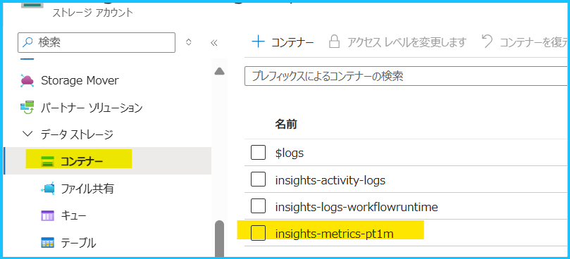
診断設定でログをストレージ アカウントにエクスポートした場合には、以下の命名規則で BLOB が作成されます。
1 | insights-logs-{log category name}/resourceId=/SUBSCRIPTIONS/{subscription ID}/RESOURCEGROUPS/{resource group name}/PROVIDERS/{resource provider name}/{resource type}/{resource name}/y={four-digit numeric year}/m={two-digit numeric month}/d={two-digit numeric day}/h={two-digit 24-hour clock hour}/m=00/PT1H.json |
insights-logs-{log category name} の {log category name} はリソースおよび収集するログの種類により異なりますが、基本的にこちらの公開情報経由で参照可能なカテゴリ名が利用されます。例えば、ロジック アプリの診断設定で WorkflowRuntime カテゴリのログをエクスポートした場合、insights-logs-workflowruntime コンテナーに情報が格納されます。
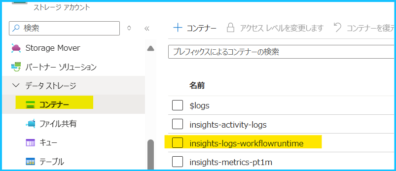
ログのカテゴリは、こちらの公開情報経由で Microsoft.Logic のワークフローのページを開くと確認できます。
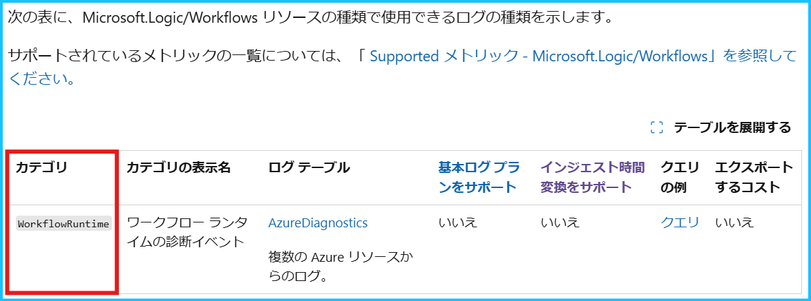
重要
リソースによっては resourceid や resourceId のように、大文字・小文字の表記が異なる場合がございます。Azure Storage ライフサイクル管理 のルールで設定する Blob prefix は大文字・小文字を区別します。ライフサイクル管理を使用する場合に、フィルターとして当該データの格納先のパスを指定する場合は、実際の BLOB のパスをご確認の上指定いただきますようお願いいたします。
Q. Azure Monitor の診断設定でリソース ログとメトリックを、Log Analytics ワークスペースにエクスポートしています。データの格納場所を教えてください。
メトリックを Log Analytics ワークスペースにエクスポートした場合は AzureMetrics テーブルにデータが格納されます。
リソース共通で AzureMetrics テーブルにエクスポートされますので、複数のリソースを 1 つの Log Analytics ワークスペースにエクスポートしている場合は、リソース ID (_ResourceId) やメトリック名 (MetricName) 等の条件を指定して検索してください。AzureMetrics テーブルのサンプル クエリは、こちらの公開情報をご覧ください。
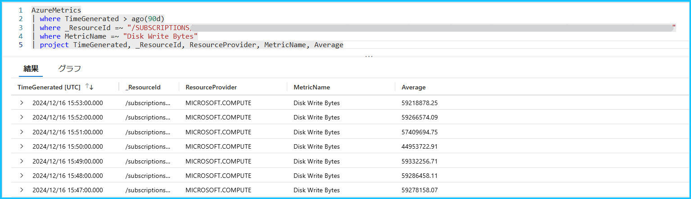
リソース ログを Log Analytics ワークスペースに送信する場合は 2 種類の収集モードがあり、AzureDiagnostics テーブル、または リソース固有のテーブルに格納されます。
- Azure Diagnostics - すべてのデータが AzureDiagnostics テーブルに書き込まれます。
- リソース固有 - データは、リソースのカテゴリごとに個別のテーブルに書き込まれます。
Azure Diagnostics とリソース固有の両方のモードをサポートしている場合は、ターゲットとして Log Analytics ワークスペースを選択すると、ターゲット テーブルを選択するオプションが表示されます。各リソースのログ出力先は、こちらの公開情報経由で参照可能な表や、Azure リソース ログの共通およびサービス固有のスキーマ、各リソース側の公開情報等をご確認ください。
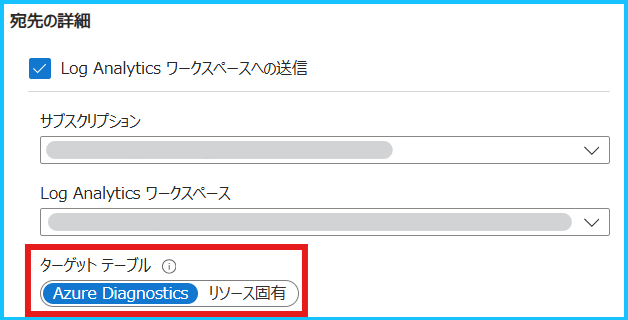
例えば、Microsoft.Automation/automationAccounts の場合、AzureDiagnostics テーブルにエクスポートされることが分かります。
AzureDiagnostics テーブルのサンプル クエリは、こちらの公開情報をご覧ください。
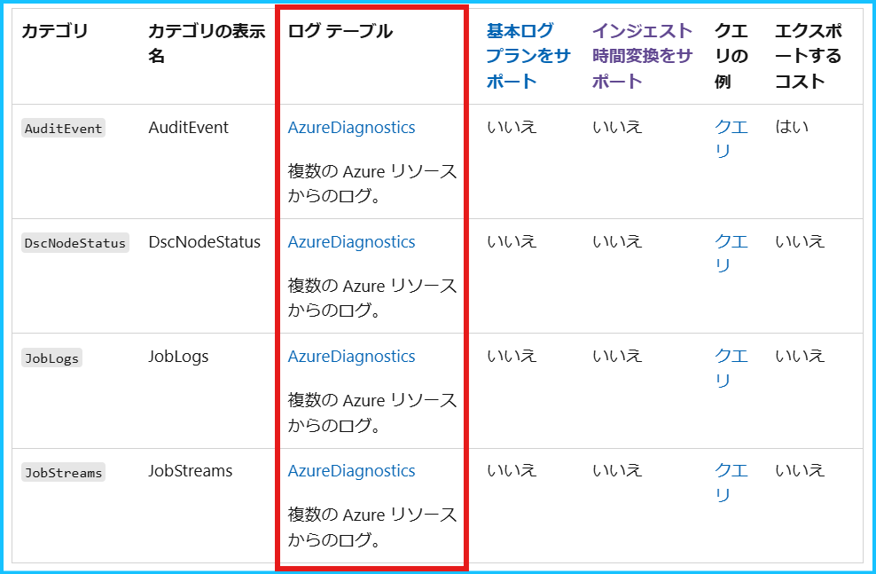
Q. Azure Monitor の診断設定でリソース ログとメトリックを、ストレージ アカウントにエクスポートしています。データの格納場所のコンテナーを変更することはできますか。
いいえ、データの格納場所のコンテナーを変更することはできません。
リソース ログとメトリックを、ストレージ アカウントにエクスポートした場合は、Q. Azure Monitor の診断設定でリソース ログとメトリックを、ストレージ アカウントにエクスポートしています。データの格納場所を教えてください。 や Q. Azure Monitor の診断設定でリソース ログとメトリックを、Log Analytics ワークスペースにエクスポートしています。データの格納場所を教えてください。 に記載した格納場所にコンテナーが作成されます。
Q. Azure VM のプラットフォーム メトリック (ホスト OS メトリック) を Log Analytics ワークスペースにエクスポートしたいのですが、Azure ポータル上に設定画面が見当たりません。
Azure VM のプラットフォーム メトリック (ホスト OS メトリック) に関する診断設定は、Azure PowerShell 等で設定可能です。
設定手順の詳細は、こちらのブログをご参照ください。
アクティビティ ログのエクスポート
Q. アクティビティ ログの診断設定の設定手順を教えてください。
Azure ポータルから設定する場合は [監視] を検索し、[アクティビティ ログ] の [診断設定] から構成いただけます。
設定手順の詳細はこちらの公開情報をご覧ください。
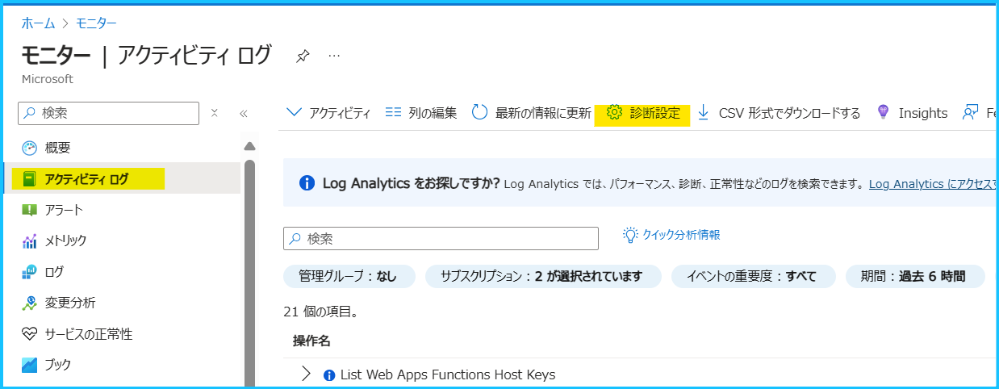
Q. アクティビティ ログのカテゴリの詳細を教えてください。
アクティビティ ログのカテゴリの詳細は、Azure アクティビティ ログのイベント スキーマの公開情報をご覧ください。
Q. アクティビティ ログを Log Analytics ワークスペースにエクスポートすることを検討しています。診断設定を構成するために必要な権限を教えてください。
診断設定を構成するサブスクリプションと、ログのエクスポート先となる Log Analytics ワークスペース側で以下の権限が必要です。Azure Monitor の組み込みロールの場合、サブスクリプションをスコープとして Monitoring Contributor (監視共同作成者) や Log Analytics Contributor (Log Analytics 共同作成者) を付与いただけますと幸いです。ロールの割り当て手順やカスタム ロールの作成手順 は公開情報をご覧ください。
サブスクリプション スコープで必要な権限 (診断設定の作成、変更、削除)
1
2
3
4"*/read",
"Microsoft.Insights/DiagnosticSettings/read",
"Microsoft.Insights/DiagnosticSettings/write",
"Microsoft.Insights/DiagnosticSettings/delete"ログのエクスポート先となる Log Analytics ワークスペースに必要な権限
1
2"Microsoft.OperationalInsights/workspaces/read",
"Microsoft.OperationalInsights/workspaces/sharedKeys/action"
Q. アクティビティ ログをストレージ アカウントにエクスポートすることを検討しています。診断設定を構成するために必要な権限を教えてください。
診断設定を構成するサブスクリプションと、ログのエクスポート先となるストレージ アカウント側で以下の権限が必要です。Azure Monitor の組み込みロールの場合、サブスクリプションをスコープとして Monitoring Contributor (監視共同作成者) や Log Analytics Contributor (Log Analytics 共同作成者) を付与いただけますと幸いです。ロールの割り当て手順やカスタム ロールの作成手順 は公開情報をご覧ください。
サブスクリプション スコープで必要な権限 (診断設定の作成、変更、削除)
1
2
3
4"*/read",
"Microsoft.Insights/DiagnosticSettings/read",
"Microsoft.Insights/DiagnosticSettings/write",
"Microsoft.Insights/DiagnosticSettings/delete"ログのエクスポート先となるストレージアカウントに必要な権限
1
2"Microsoft.Storage/storageAccounts/Read",
"Microsoft.Storage/storageAccounts/listkeys/action"
Q. 特定のリソースのアクティビティ ログを、Log Analytics ワークスペースやストレージ アカウントにエクスポートすることは可能ですか。
いいえ、特定のリソースのアクティビティ ログのみをエクスポートすることはできません。
アクティビティ ログの診断設定はサブスクリプション単位で指定するものであり、リソース単位で設定することはできません。
Q. Azure ポータルからリソース グループの [アクティビティ ログ] > [診断設定] を開くと、アクティビティ ログの診断設定が表示されます。リソース グループ単位でアクティビティ ログの診断設定を作成できるのでしょうか。
いいえ、できません。
リソース グループの [アクティビティ ログ] > [診断設定] からも、アクティビティ ログの診断設定が表示されますが、あくまで表示されているだけであり、アクティビティ ログの診断設定はサブスクリプション単位でしか設定できません。
Q. Azure Monitor の診断設定で、アクティビティ ログをストレージ アカウントにエクスポートしています。データの格納場所を教えてください。
アクティビティ ログをストレージ アカウントにエクスポートすると、追加 BLOB が作成され、以下の命名規則で BLOB が作成されます。
1 | insights-activity-logs/resourceId=/SUBSCRIPTIONS/{subscription ID}/y={four-digit numeric year}/m={two-digit numeric month}/d={two-digit numeric day}/h={two-digit 24-hour clock hour}/m=00/PT1H.json |
リソース共通で insights-activity-logs コンテナーに情報が格納されます。
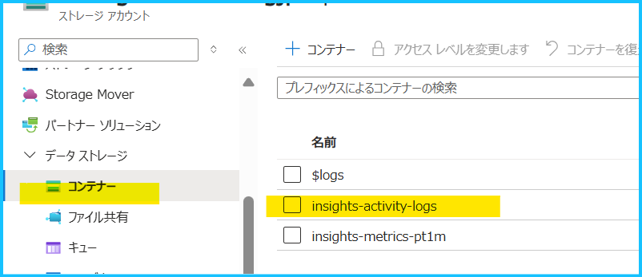
Q. Azure Monitor の診断設定で、アクティビティ ログを Log Analytics ワークスペースにエクスポートしています。データの格納場所を教えてください。
アクティビティ ログを Log Analytics ワークスペースにエクスポートした場合は AzureActivity テーブルにデータが格納されます。
AzureMetrics テーブルのサンプル クエリは、こちらの公開情報をご覧ください。
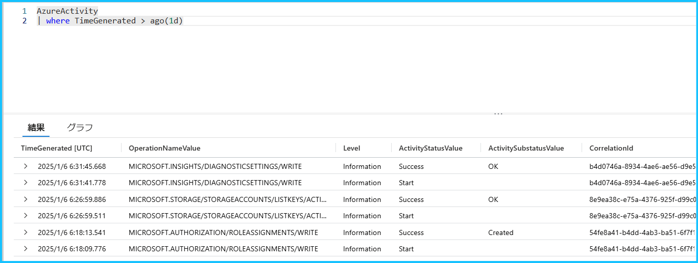
Q. アクティビティ ログを Log Analytics ワークスペースにエクスポートした場合、Log Analytics ワークスペースに対する料金が発生しますか。
いいえ、アクティビティ ログを Log Analytics ワークスペースにエクスポートしても、Log Analytics ワークスペースに対するインジェスト料金や保持料金は発生しません。
トラブルシューティング
Q. Azure Monitor の診断設定によるプラットフォーム メトリックやリソース ログのエクスポートは、100 % のデータ エクスポートを保証していますか。
いいえ、100 % のデータ エクスポートを保証しておりません。
診断設定は、1 日あたりペタバイト単位のデータをお手頃な価格で、効率よくエクスポートすることを前提に設計されているため、完全なトランザクションは保証しておらず、ログやプラットフォーム メトリックが一部欠損する可能性がございます。診断設定によるプラットフォーム メトリックやリソース ログの一部欠損についてのブログでも紹介しておりますので、ご確認いただけますと幸いです。
Q. Log Analytics ワークスペースやストレージ アカウントにログやメトリックをエクスポートしていますが、データが格納されていません。考えられる原因を教えてください。
考えられる原因は以下の通りです。
なお、診断設定によるエクスポートでは、制約上、プラットフォーム メトリックやログの一部欠損は発生する可能性がございますので、予めご留意ください。
1. ログの出力に時間を要している
診断設定は、基本的には 90 分以内にデータがエクスポートされ始めますが、これよりもお時間がかかることもございます。
診断設定の構成後、1 日程度お時間をおいていただき、ログを確認できるかどうかをご確認いただけますと幸いです。
2. 対象のログがそもそも生成されていない
診断設定を構成しますと、リソース側から出力されたログは、基盤側の内部パイプラインを通じて Log Analytics ワークスペースやストレージ アカウントに送信されます。そもそもリソース側でログが生成されていない場合には、Log Analytics ワークスペースやストレージ アカウントにはログが収集されません。各リソースのログが生成される条件や契機をご確認されたい場合には、各リソース観点でお問い合わせのご起票をお願いいたします。
3. ストレージ アカウントのネットワーク設定で “信頼された Microsoft サービス” が許可されていない
ログの出力先がストレージ アカウントの場合は、ストレージ アカウントのネットワーク設定により、データがエクスポートされていない可能性がございます。宛先のストレージ アカウントが選択したネットワークからのアクセスを許可する構成である場合、 [信頼されたサービスの一覧にある Azure サービスがこのストレージ アカウントにアクセスすることを許可します] が有効になっているかどうかをご確認ください。
完全に外部からのアクセスを無効にすると、Azure Monitor サービスからの通信が遮断され、ログやメトリックをエクスポートすることができません。また、選択したネットワークからのアクセスを許可する構成の場合、Azure Monitor サービスからの通信を許可するために [信頼されたサービスの一覧にある Azure サービスがこのストレージ アカウントにアクセスすることを許可します] を有効にしていただく必要がございます。
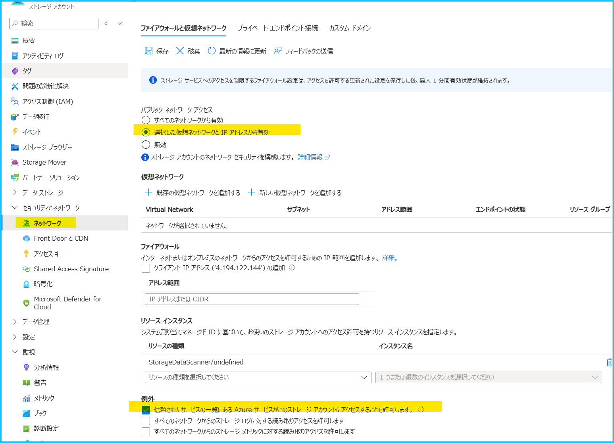
上記に該当せず、一部の欠損ではなく継続的にログやメトリックが出力されていない場合は、下記の情報をお寄せいただき、弊社サポート窓口までお問い合わせください。
・診断設定を構成しているリソースのリソース ID
・診断設定の名前
・ログやメトリックが出力されることが想定された日時 (タイムゾーンを明記してご記載ください。例. 2024-12-30 12:00 JST)
・出力されることが想定されたログのカテゴリ名やメトリック名
Q. Azure Monitor の診断設定を構成しましたが、設定が消えてしまいました。
日本語を含む、英数字以外の文字がリソース名に含まれる場合、診断設定を作成しても設定が消えることがあります。
ただし本事象は公開情報にも記載があるとおり、診断設定が英数字以外の文字をサポートしないために発生する事象であるため、製品の不具合ではございません。
Q. 新たに Azure Monitor の診断設定を構成しようとしたところ、ストレージ アカウントの保持期間を指定する項目が表示されません。以前は、診断設定にてストレージ アカウントにエクスポートした場合、保持期間を指定する項目が表示されていました。
こちらのブログでもご紹介しておりますとおり、診断設定固有のストレージ アカウントの保持機能は廃止されます。
以前は、診断設定にてストレージ アカウントを出力先としていた場合、診断設定側でログの保持期間の指定ができましたが、今後はストレージ アカウント側の Azure Storage ライフサイクル管理にて保持期間を指定する必要がございます。
また、診断設定固有のストレージ アカウントの保持機能の廃止に伴う移行手順は、こちらの公開情報をご覧ください。
上記の内容以外でご不明な点や疑問点などございましたら、弊社サポート サービスまでお問い合わせください。
最後までお読みいただきありがとうございました！
※本情報の内容（添付文書、リンク先などを含む）は、作成日時点でのものであり、予告なく変更される場合があります。